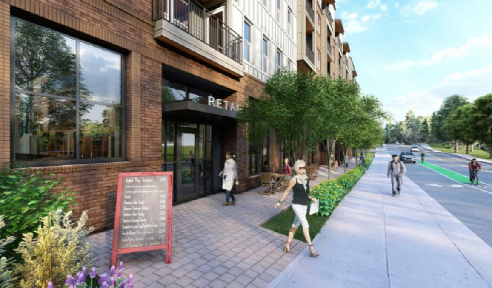
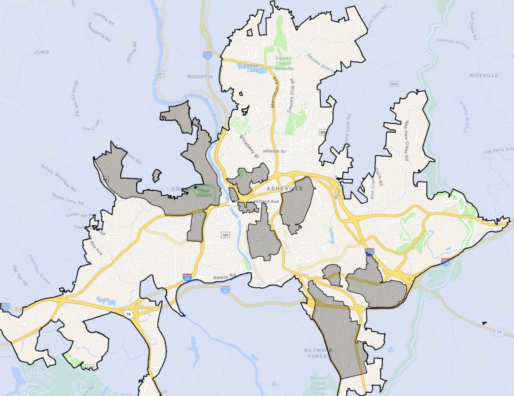
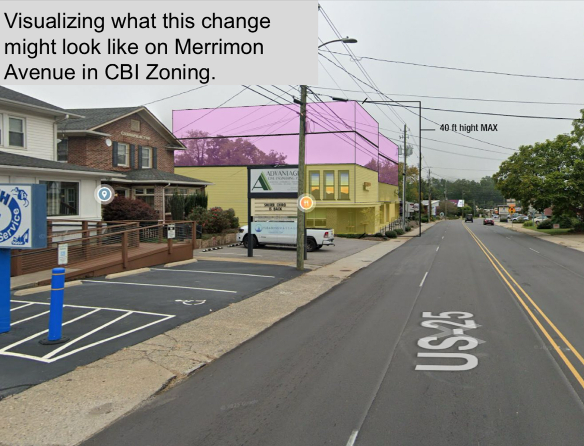
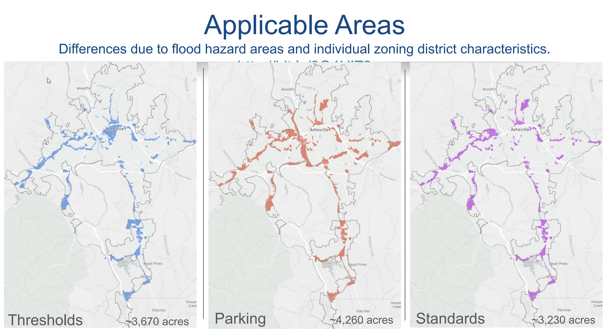

Asheville City Council - March 11th Meeting
March 17, 2025
Here’s what we found to be the most important housing-related items at Asheville’s City Council meeting of Tuesday, March 11, 2025.

This meeting saw the culmination of the five Unified Development Ordinance (UDO) amendments—basically, five proposed changes to Asheville’s zoning code—that we had promoted at the start of February. All five changes were originally slated for a vote on February 11th, but they were all delayed—or “continued”—by one month.
For a refresher on these five zoning text amendments, you can find our case for them laid out here.
Residential Zoning Text Amendments: Cottage Courts and Flag Lots
Cottage Development Standards
Asheville For All Position: In Support 👍
Outcome: Amended and Approved
Votes:
In favor: Esther E. Manheimer, Maggie Ullman, Sage Turner, Bo Hess
Against: S. Antanette Mosley, Sheneika Smith, Kim Roney
Flag Lot Standards
Asheville For All Position: In Support 👍
Outcome: Amended and Approved
Votes:
In favor: Esther E. Manheimer, Maggie Ullman, Sage Turner, Bo Hess
Against: S. Antanette Mosley, Sheneika Smith, Kim Roney
These two amendments are unique in that they are citizen-initiated reforms. They both promote infill housing in residential neighborhoods in different ways, by tweaking existing rules. Flag lots, for example, have always been legal in Asheville. (Flag lots are when one house is built in back of another, and a thin stretch of land connects the house in back to the street.) But rules such as minimum width (of the flagpole portion of the flag lot) and minimum setbacks for the border between the two houses have kept them from being built, especially in neighborhoods where lots are smaller.
Asheville City Council was close to passing these amendments in summer 2024, but they ultimately punted the decision to last month, at which point they were again continued. Several of the council members’ stated concerns for doing so centered around fears of “displacement” in disadvantaged communities and/or “legacy neighborhoods.”
There were no public comments allowed on these two agenda items, as their time for comments had already been allowed.
The twist is that city staff presented a new option to council—to amend the proposed amendments with language that would exclude certain neighborhoods from the changes.

We believe that the intent, as it was stated by city staff and some council members, is not to permanently freeze the housing supply of these neighborhoods in place. (As Asheville’s 2023 Displacement Risk Assessment notes on page 126, that would only exacerbate housing problems there.) Rather it is to allow some extra time for the city to work with the leaders in these communities for them to determine together if unique or alternative reforms are required for these particular communities.
So at long last, Asheville City Council approved these residential zoning code adjustments. The votes in favor were consistent with last month’s votes: Esther E. Mannheimer, Sage Turner, Maggie Ullman, and Bo Hess voted in favor; while S. Antanette Mosley, Sheneika Smith, and Kim Roney voted against.
Commercial District Text Amendments
Project Level Thresholds
Asheville For All Position: In Support 👍
Outcome: Amended and Approved
Votes:
In favor: Esther E. Manheimer, Maggie Ullman, Sage Turner, Bo Hess
Against: S. Antanette Mosley, Sheneika Smith, Kim Roney
Parking Minimums
Asheville For All Position: In Support 👍
Outcome: Approved
Votes:
Unanimous in favor
Commercial Zoning District Updates
Asheville For All Position: In Support 👍
Outcome: Approved
Votes:
In favor: Esther E. Manheimer, Maggie Ullman, Sage Turner, Bo Hess
Against: S. Antanette Mosley, Sheneika Smith, Kim Roney
This “package” of changes to the city’s commercial corridors—think Patton Ave., Merrimon Ave., Haywood Rd., Long Shoals Rd., Brevard Rd., and Tunnel Rd.—has the potential to be a big deal. It encompasses three sets of changes, which are designed to work together.
Together, the changes will make it easier and more viable for developers to build more multifamily housing. The bundle of amendments will also likely better promote more walkable environments, by incentivizing buildings that go right up to the sidewalk, for example, and by encouraging more bicycle parking and less car parking.

City Council largely expressed support for these changes, but the one nit that was picked was the issue of the new zoning threshold table, and the degree to which it will tie “by right” construction privileges to the creation of deed-restricted, below-market-rate homes.
(You can find Asheville For All’s position on this matter towards the bottom of our January letter to the city’s Planning and Zoning Commission here.)

After some back and forth, the Council voted to amend the zoning threshold amendment to replace the table that city staff had created after consulting with local developers, in favor of a table produced by Councilor Turner.
Ultimately, all three of these amendments did pass, though only one was unanimous: the one to eliminate parking minimums on commercial corridors. Once again, Roney, Smith, and Mosley voted “no” on amendments to Project Level Thresholds—that’s the one to remove the redundant barriers that prevent “by-right” approval for housing that’s already allowed by the zoning districts—and Commercial Zoning District Updates—the one that removes residential density caps and reduces front and corner setbacks.
The Turner Amendment to the Project Level Thresholds
Here’s a look at the change that Sage Turner introduced and successfully amended to the Zoning Threshold UDO amendment. To get a better understanding of it, we’ve placed it side-by-side with the staff-proposed thresholds, as well as the revisions that Asheville For All suggested in January.
(Recall that the status quo had any project with more than 49 homes automatically requiring a “Level III review” in front of City Council. Note that all of these proposals create options for developers to avoid Level III, with some maxing out at higher square footages than others. Turner’s is the only version of the table that will impose additional requirements to new apartment buildings proposed with under fifty homes.)
| Residential (Non-Mixed Use) Table | |||
| Square Foot max | Staff Proposed Mandate | Asheville For All Proposed Revision | Sage Turner's Amendment |
| 100,000 | no mandate (baseline) | no revision | 5% at 80%AMI or 3% at 60%AMI |
| 150,000 | 5% at 80%AMI or 2% at 60%AMI | no revision | 10% at 80%AMI or 5% at 60%AMI |
| 200,000 | 10% at 80%AMI or 5% at 60%AMI | 5% at 80%AMI or 2% at 60%AMI | 15% at 80%AMI or 8% at 60%AMI |
| 250,000 | 15% at 80%AMI or 7% at 60%AMI | 10% at 80%AMI or 5% at 60%AMI | |
| 300,000 | 20% at 80%AMI or 10% at 60%AMI | 10% at 80%AMI or 5% at 60%AMI | |
| Mixed Use Table (30-80% Residential) | |||
| Square Foot max | Staff Proposed Mandate | Asheville For All Proposed Revision | Sage Turner's Amendment |
| 150,000 | no mandate (baseline) | no revision | 5% at 80%AMI or 3% at 60%AMI |
| 200,000 | 5% at 80%AMI or 2% at 60%AMI | no revision | 10% at 80%AMI or 5% at 60%AMI |
| 250,000 | 10% at 80%AMI or 5% at 60%AMI | 5% at 80%AMI or 2% at 60%AMI | 15% at 80%AMI or 8% at 60%AMI |
| 300,000 | 15% at 80%AMI or 7% at 60%AMI | 10% at 80%AMI or 5% at 60%AMI | |
| 350,000 | 20% at 80%AMI or 10% at 60%AMI | 10% at 80%AMI or 5% at 60%AMI | |
Concluding Notes
At this moment, it’s unclear to us exactly what effect Turner’s amendment to the zoning threshold motion may have on development in the city’s commercial corridors.
But we’re confident in saying that Tuesday night was a win for housing overall. Thanks again to the councilors that voted for pro-housing reform. Thanks also to the city’s Planning and Urban Design Department, who clearly put a lot of time, effort and thought into the three commercial amendments. Thanks as well to the city’s Planning and Zoning Commission which we understand had an unusually important role in spurring and crafting these amendments.
Finally, big thanks to the pro-housing voices that came out in support to the council meeting on Tuesday. You can find all of their comments on YouTube here.
Additional Media Coverage
- Mountain Xpress: “Council approves zoning code changes to accelerate projects”
- Blue Ridge Public Radio: “Last night at Council: Asheville’s ‘sad’ Arby’s inspires looser zoning rules”